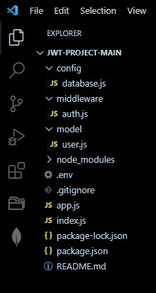

- Create mydb1 mongo database.
-
To run the application
npm run dev
-
API List
POST : http://localhost:4001/register
{ "first_name": "abhay", "last_name": "nath", "email": "abhaynath88@gmail.com", "password": "abhay123" }POST : http://localhost:4001/login
{"email":"abhaynath88@gmail.com","password":"abhay123"}{ "first_name": "abhay", "last_name": "nath", "_id": "61d1334bf835b410c8e21dbc", "email": "abhaynath88@gmail.com", "password": "$2a$10$skVg4pBYeiwIaQ3IsShy2O7qnoaGF57TjyefrSBk2dZ5EDpo/sCSy", "__v": 0, "token": "eyJhbGciO.eyJ1c2VyX2l.nBzlDgfLQuo" }GET : http://localhost:4001/welcome
In Headers section, create new key x-access-token. Its value should be the token received from login api response.
index.js
const http = require("http");
const app = require("./app");
const server = http.createServer(app);
const { API_PORT } = process.env;
const port = process.env.PORT || API_PORT;
server.listen(port, () => {
console.log(`Server running on port ${port}`);
});
app.js
require("dotenv").config();
require("./config/database").connect();
const express = require("express");
const bcrypt = require("bcryptjs");
const jwt = require("jsonwebtoken");
const User = require("./model/user");
const auth = require("./middleware/auth");
const app = express();
app.use(express.json({ limit: "50mb" }));
app.post("/register", async (req, res) => {
try {
// Get user input
const { first_name, last_name, email, password } = req.body;
// Validate user input
if (!(email && password && first_name && last_name)) {
res.status(400).send("All input is required");
}
// check if user already exist
// Validate if user exist in our database
const oldUser = await User.findOne({ email });
if (oldUser) {
return res.status(409).send("User Already Exist. Please Login");
}
//Encrypt user password
encryptedPassword = await bcrypt.hash(password, 10);
// Create user in our database
const user = await User.create({
first_name,
last_name,
email: email.toLowerCase(), // sanitize: convert email to lowercase
password: encryptedPassword,
});
// Create token
const token = jwt.sign(
{ user_id: user._id, email },
process.env.TOKEN_KEY,
{
expiresIn: "2h",
}
);
// save user token
user.token = token;
// return new user
res.status(201).json(user);
} catch (err) {
console.log(err);
}
});
app.post("/login", async (req, res) => {
try {
// Get user input
const { email, password } = req.body;
// Validate user input
if (!(email && password)) {
res.status(400).send("All input is required");
}
// Validate if user exist in our database
const user = await User.findOne({ email });
if (user && (await bcrypt.compare(password, user.password))) {
// Create token
const token = jwt.sign(
{ user_id: user._id, email },
process.env.TOKEN_KEY,
{
expiresIn: "2h",
}
);
// save user token
user.token = token;
// user
res.status(200).json(user);
}
res.status(400).send("Invalid Credentials");
} catch (err) {
console.log(err);
}
});
app.get("/welcome", auth, (req, res) => {
res.status(200).send(req.user);
});
// This should be the last route else any after it won't work
app.use("*", (req, res) => {
res.status(404).json({
success: "false",
message: "Page not found",
error: {
statusCode: 404,
message: "You reached a route that is not defined on this server",
},
});
});
module.exports = app;
package.json
{
"name": "jwt-project",
"version": "1.0.0",
"description": "A demo about authentication using jwt",
"main": "index.js",
"scripts": {
"start": "node index.js",
"dev": "nodemon index.js",
"test": "echo \"Error: no test specified\" && exit 1"
},
"repository": {
"type": "git",
"url": "git+https://github.com/Olanetsoft/jwt-project.git"
},
"keywords": [
"jwt",
"node",
"authentication"
],
"author": "Idris Olubisi",
"license": "ISC",
"bugs": {
"url": "https://github.com/Olanetsoft/jwt-project/issues"
},
"homepage": "https://github.com/Olanetsoft/jwt-project#readme",
"dependencies": {
"bcryptjs": "^2.4.3",
"dotenv": "^10.0.0",
"express": "^4.17.1",
"jsonwebtoken": "^8.5.1",
"mongoose": "^5.12.10"
},
"devDependencies": {
"nodemon": "^2.0.7"
}
}
.env
API_PORT=4001
MONGO_URI= mongodb://localhost:27017/mydb1
TOKEN_KEY=Od4pSRVAb4Z6Q2oOxqgSJnnaCchFJF87mQIlha3g6568av8BiiscmgpSjdFS0uzO
database.js
const mongoose = require("mongoose");
const { MONGO_URI } = process.env;
exports.connect = () => {
// Connecting to the database
mongoose
.connect(MONGO_URI, {
useNewUrlParser: true,
useUnifiedTopology: true,
useCreateIndex: true,
useFindAndModify: false,
})
.then(() => {
console.log("Successfully connected to database");
})
.catch((error) => {
console.log("database connection failed. exiting now...");
console.error(error);
process.exit(1);
});
};
auth.js
const jwt = require("jsonwebtoken");
const config = process.env;
const verifyToken = (req, res, next) => {
const token =
req.body.token || req.query.token || req.headers["x-access-token"];
if (!token) {
return res.status(403).send("A token is required for authentication");
}
try {
const decoded = jwt.verify(token, config.TOKEN_KEY);
req.user = decoded;
} catch (err) {
return res.status(401).send("Invalid Token");
}
return next();
};
module.exports = verifyToken;
user.js
const mongoose = require("mongoose");
const userSchema = new mongoose.Schema({
first_name: { type: String, default: null },
last_name: { type: String, default: null },
email: { type: String, unique: true },
password: { type: String },
token: { type: String },
});
module.exports = mongoose.model("user", userSchema);
.gitignore
# Logs
logs
*.log
npm-debug.log*
yarn-debug.log*
yarn-error.log*
lerna-debug.log*
# Diagnostic reports (https://nodejs.org/api/report.html)
report.[0-9]*.[0-9]*.[0-9]*.[0-9]*.json
# Runtime data
pids
*.pid
*.seed
*.pid.lock
# Directory for instrumented libs generated by jscoverage/JSCover
lib-cov
# Coverage directory used by tools like istanbul
coverage
*.lcov
# nyc test coverage
.nyc_output
# Grunt intermediate storage (https://gruntjs.com/creating-plugins#storing-task-files)
.grunt
# Bower dependency directory (https://bower.io/)
bower_components
# node-waf configuration
.lock-wscript
# Compiled binary addons (https://nodejs.org/api/addons.html)
build/Release
# Dependency directories
node_modules/
jspm_packages/
# TypeScript v1 declaration files
typings/
# TypeScript cache
*.tsbuildinfo
# Optional npm cache directory
.npm
# Optional eslint cache
.eslintcache
# Microbundle cache
.rpt2_cache/
.rts2_cache_cjs/
.rts2_cache_es/
.rts2_cache_umd/
# Optional REPL history
.node_repl_history
# Output of 'npm pack'
*.tgz
# Yarn Integrity file
.yarn-integrity
# dotenv environment variables file
.env
.env.test
# parcel-bundler cache (https://parceljs.org/)
.cache
# Next.js build output
.next
# Nuxt.js build / generate output
.nuxt
dist
# Gatsby files
.cache/
# Comment in the public line in if your project uses Gatsby and *not* Next.js
# https://nextjs.org/blog/next-9-1#public-directory-support
# public
# vuepress build output
.vuepress/dist
# Serverless directories
.serverless/
# FuseBox cache
.fusebox/
# DynamoDB Local files
.dynamodb/
# TernJS port file
.tern-port